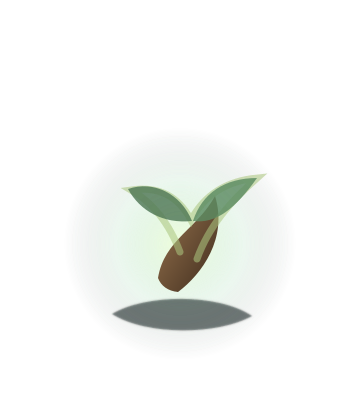

살아있는 숲 V1.10.7 test · 체험판
살아있는 숲
하루에 한 번, 지금의 마음을 내 나무에게 남겨요.
V1.10.7 test · 월드 숲 스케일/원근감 재설계 1차
낮 숲
•
내 자리
내 자리는 아직 씨앗을 기다리고 있어요.
이름 없는 나무
오늘 기록 전내 나무가 이 숲에 들어갈 준비를 하고 있어요.
숲의 다른 자리들도 조용히 숨 쉬고 있어요.
지금 숲의 빛과 생명체 움직임이 시간에 따라 달라져요.
오늘의 흐름
내 나무를 심을 준비
숲을 둘러보고, 내 나무가 자랄 작은 자리를 시작해요.
오늘 내 나무 돌보기 · V1.10.7 test
밤 정원
좋음도, 보통도, 피곤함도 모두 성장으로 남아요.
이름 없는 나무

하루에 한 번, 지금의 나와 가까운 상태를 골라주세요.
아직 오늘의 상태를 기록하지 않았어요.
오늘은 조용한 정원이에요
방문자가 다녀가면 이곳에 작은 흔적이 남아요.
최근 숲에 다녀간 친구들
아직 남은 방문 기록이 없어요.
체험판에서는 기록이 이 기기에만 저장돼요. 기기를 바꾸면 기록이 이어지지 않을 수 있어요.